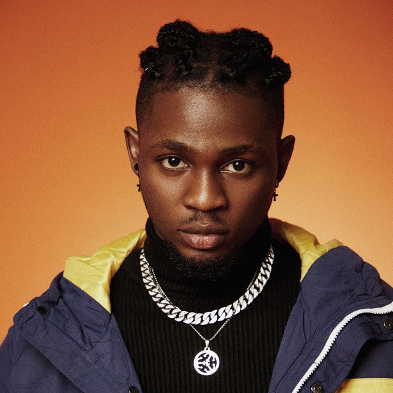
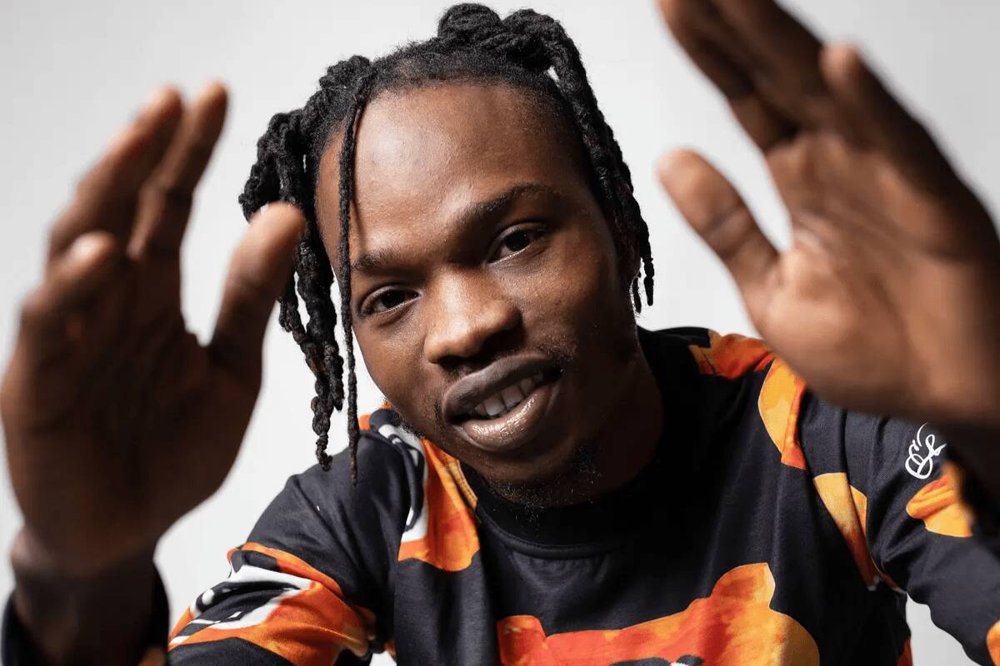

Rema

Il est considéré par des critiques comme possédant une capacité vocale particulière et «un jeune prodige de l’Afrobeat».
Omah Lay
Omah Lay s a Nigerian singer, songwriter, and record producer. His self-produced single "Bad Influence" went viral on social media.
Naïra Marley
Naira Marley chante en anglais, en pidgin et en yoruba. Sa musique est un mélange d'afrobeat et de hip-hop.